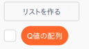
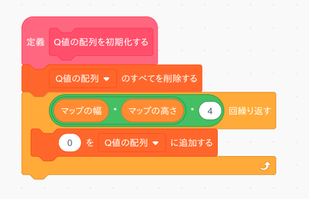
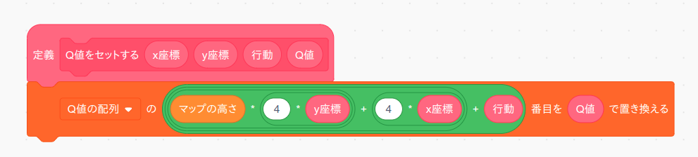
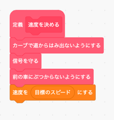
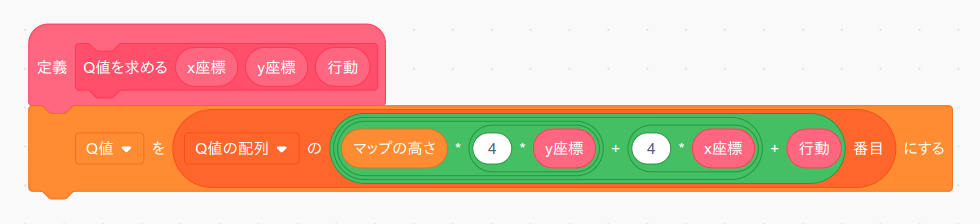
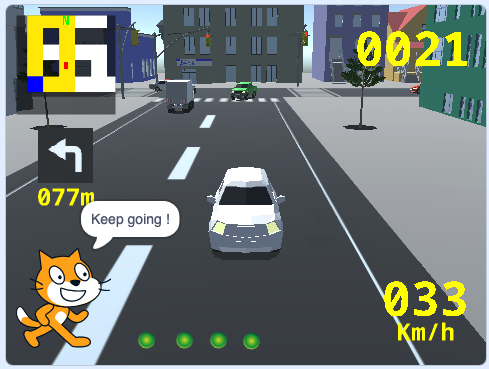

1
次は前を走る車にぶつからないようにするプログラムを作ってみましょう。
本物の車の場合はカメラやライダーなどのセンサーによって車のまわりにある物の距離や種類や速度などを取得しますが、このシミュレータでは「左センサー」「前方-左センサー」「前方-右センサー」「右センサー」変数ブロックで車のまわりにある物の状態を取得できます。
ただしこのシミュレータでは車以外のものは(今のところ)ありませんし、速度の情報も省略しているので、各センサーの情報はその方向にいる車までの距離(メートル)をあらわします。
2
ではまた「もし〜なら」ブロックの条件をミーシー思考とミニ・マックス思考を使ってかんがえてみましょう。
日本では車は左車線を走るように法律で決められていますので、使う情報は「前方-左センサー」だけになります。 よって信号の時と違ってとてもシンプルな表になります。
| 「前方-左センサー」 | 「仮のスピード」 |
|---|---|
| 15 より大 (遠い) | 50 |
| 15以下、10より大 (近い) | 20 |
| 10以下 (直前) | 0 |
信号の時と同じ様に、この表を「もし〜ならば、でなければ」ブロックを使って置き換えると次のようになります。
| 「前方-左センサー」 | 「仮のスピード」 |
|---|---|
| 15 より大 (遠い) | 50 |
| でなければ | |
| 10より大 (近い) | 20 |
| でなければ | |
| 情報をつかわない (直前) | 0 |
3
これで「もし〜なら」ブロックの条件が分かりましたので早速プログラミングしてみましょう。
まず「前の車にぶつからないようにする」というオリジナルブロックを作ります。 このブロックは繰り返し使いますので「画面を再描画せずに実行する」をチェックしてください。
「前の車にぶつからないようにする」ブロックの中身は次のようになります。 やはり表の内容と「もし〜なら」ブロックの条件がまったく同じになっていますね。
あとは「速度を決める」ブロックを次のように変更すればOKです。
ただこのままでは実行しても車が出ませんので、「スタート」ブロックで車をONにするのを忘れないで下さい。
4
では「緑の旗」ボタンを押してテストしてみましょう。
正しく動いたら「ストップ」ボタンを押してタイトル画面に戻って下さい(シミュレータ画面は動作が重いのでプログラミングはタイトル画面でした方が良いです)。
チャレンジ
「視点〜」ブロックを使うと視点を切り替えることが出来ます(4種類)。 下の画像の様にスプライト機能を使って画面の下にボタンを4つ追加し、各ボタンを押したら視点が切り替わるようなプログラムをつくってみましょう。
